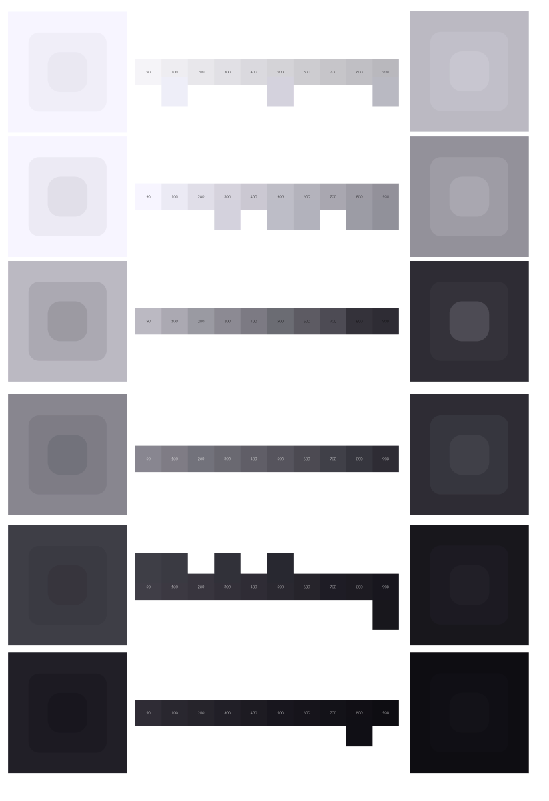
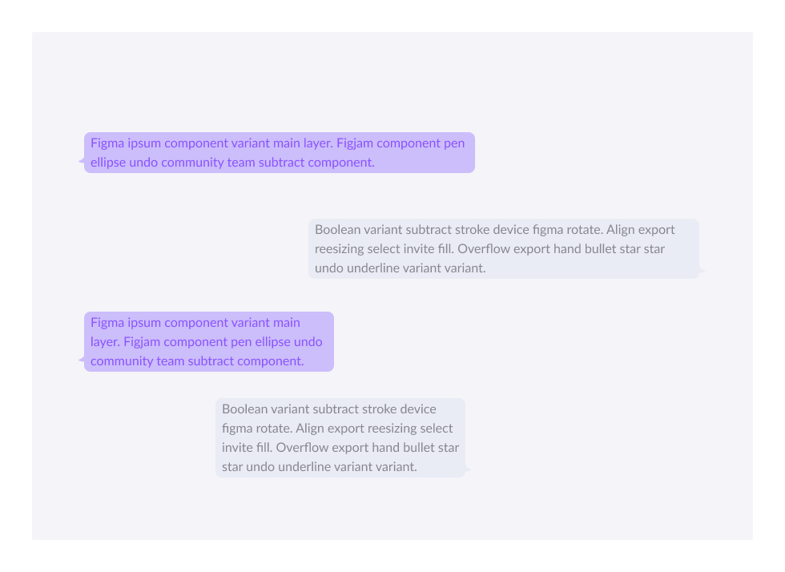
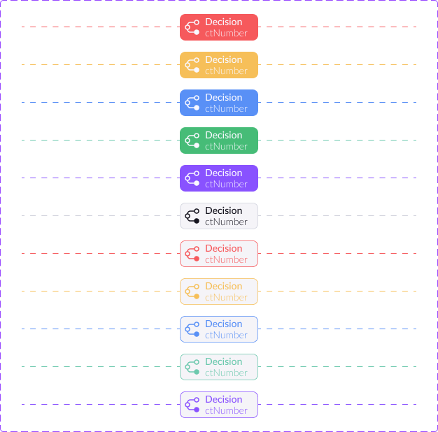

Consistência entre fluxos
Componentes e padrões de conversa compartilhados entre os times, reduzindo a necessidade de reinterpretar cada entrega.
Case study
Minha contribuição contínua para o Design System de experiências conversacionais da smarters — construído do zero com o time e evoluído no dia a dia conforme os produtos de WhatsApp cresciam.

Componentes e padrões de conversa compartilhados entre os times, reduzindo a necessidade de reinterpretar cada entrega.
Documentação e exemplos pensados pra quem tem menos familiaridade com o Figma conseguir aplicar o padrão sem depender de outra pessoa.
Revisão e atualização constante dos componentes, acompanhando a evolução dos produtos conversacionais da empresa.
Conforme os produtos de agentes conversacionais da smarters cresceram, times diferentes — design, conteúdo, dados, integrações — passaram a trabalhar nos mesmos tipos de blocos dentro do Figma: textos, decisões de fluxo, validações. Manter consistência nisso exigia um sistema compartilhado, não documentação isolada.
Faço parte da construção desse Design System desde que entrei na empresa, contribuindo em diferentes frentes conforme a necessidade — sem uma área fixa só minha. Isso faz parte da rotina do time, não é um projeto paralelo.
O Design System não é um arquivo que a gente visita de vez em quando — ele aparece em situações bem comuns da rotina do time. Algumas delas:
Em vez de desenhar cada tela do início, o ponto de partida já é a biblioteca de componentes — o que sobra de tempo vai pra pensar no problema do usuário, não em reinventar um botão.
A documentação no Figma funciona como primeiro contato com os padrões — reduz a quantidade de perguntas básicas repetidas pra quem já está craque no assunto.
Como o componente é compartilhado, a mudança se propaga pros fluxos que o usam — em vez de caçar e ajustar manualmente cada tela que tinha uma cópia dele.
Com os blocos de texto organizados como componentes, fica mais claro o que precisa ser traduzido e o que é estrutura técnica que não muda entre idiomas.
Clique em cada decisão pra ver mais
Organizamos os componentes em duas camadas: o que a pessoa vê na conversa (textos, botões, listas) e o que orienta a implementação (variáveis, condições, integrações) — com nomenclatura consistente entre as duas, reduzindo a necessidade de reinterpretar cada fluxo do zero.

O que a pessoa lê e responde — tom, clareza e ritmo da mensagem.

O que guia a implementação — variáveis, condições e integrações por trás da mensagem.
Componentes reais do Design System, direto do Figma, usados aqui pra ilustrar as duas camadas.
Definimos, junto com o time, como o sistema trata respostas fora do esperado: qual mensagem de correção mostrar, quantas tentativas oferecer antes de encaminhar pra outro caminho, e como manter o tom do produto mesmo quando o fluxo sai do previsto.
Mantemos a biblioteca de componentes e os guias de uso atualizados no Figma como referência compartilhada — qualquer pessoa do time de design, conteúdo ou desenvolvimento consegue consultar o padrão vigente sem depender de alguém explicar por chat.
Separamos, dentro de cada componente, o que é texto (precisa ser traduzido) do que é estrutura técnica (não muda entre idiomas) — isso deixa mais rápido adaptar um fluxo pra outro mercado sem redesenhar tudo de novo.
Documentação separada da ferramenta de trabalho tende a ficar desatualizada rápido. Manter o padrão dentro do próprio Figma, perto de onde o design acontece, aumenta a chance de ele realmente ser consultado e seguido.
Qualquer pessoa do time que esbarrar numa necessidade real pode sugerir — a ideia passa por uma revisão coletiva antes de entrar na biblioteca oficial, pra garantir que ela realmente serve pra mais de um fluxo.
A conversa acontece em torno do problema que o componente resolve, não da preferência pessoal — o que ajuda a chegar numa decisão mais rápido e a documentar o porquê dela, pra não reabrir a mesma discussão depois.
Clique nos cards pra virar e ver.
Com o tempo, o Design System deixou de ser só um arquivo de referência e passou a ser o ponto de partida real dos times que trabalham com experiências conversacionais na empresa — reduzindo a necessidade de redecidir as mesmas coisas em cada novo fluxo e dando mais consistência entre os produtos.
Resultado descrito de forma qualitativa, sem métricas fechadas de antes/depois.